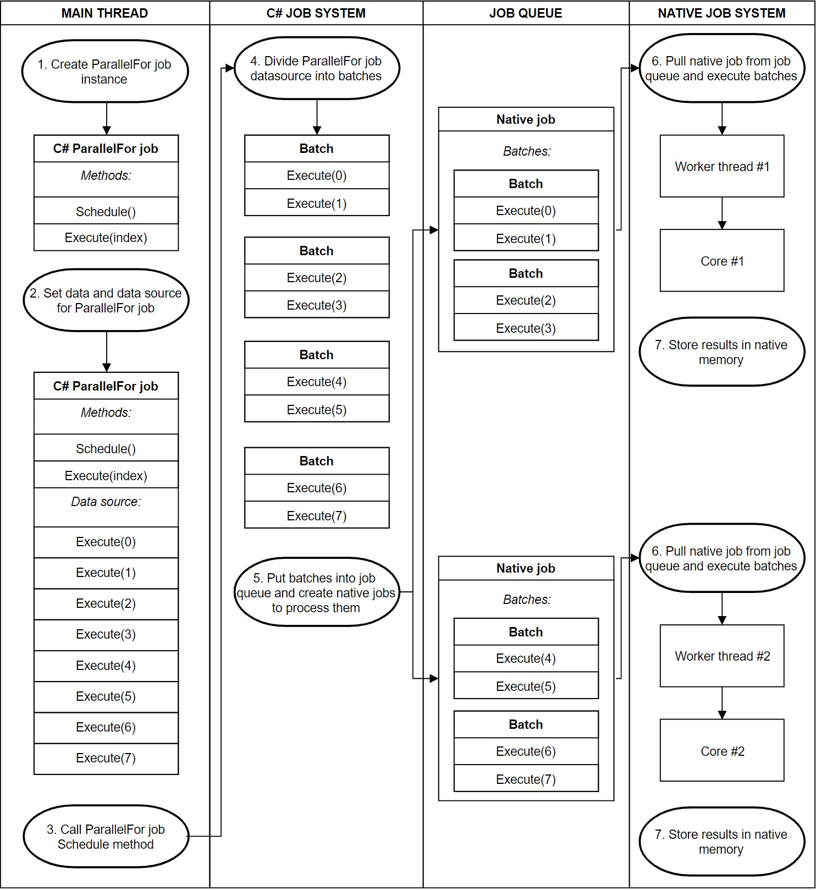

Job System
Table of Contents
- Job System
- Unity Job System
- 概述
- Safety system
- Native Container
- Creating Jobs and Scheduling Jobs
- Job Handle and dependencies
- ParallelFor Jobs and ParallelForTransform Jobs
- C# Job System tips and troubleshooting
- 在 job 中不要访问 static 数据 （Do not access static data from a job）
- 刷新调度了的 Batches (Flush scheduled batches)
- 不要尝试去更新 NativeContainer 的内容 (Don't try to update NativeContainer contents)
- 调用 JobHandle.Complete 来重新获得所有权（Call JobHandle.Complete to regain ownership)
- 在主线程使用 Schedule 和 Complete（Use Schedule and Complete in the main thread）
- 在正确的时机使用 Schedule 和 Complete (Use Schedule and Complete at the right time)
- 将 NativeContainer 标记为 read-only (Mark NativeContainer types as read-only)
- 检查数据依赖 (Check for data dependencies)
- Debugging Job
- 不要在 job 中申请托管内存 (Do not allocate managed memory in jobs)
- ERROR
- 参考资料
- Unity Job System
- Implement Job System With CPP
Job System note.
<!– more –>
Job System
Unity Job System
概述
使用 Unity C# Job System，用户可以编写多线程代码和 Unity 的其他部分交互，其使得编写正确的多线程代码变得更容易。C# Job System 和 Unity 引擎内部使用的 Native Job System 是互相结合在一起的。用户写的代码和 Unity 共享工作线程。这种协同方式避免了创建多于 CPU 核心数量的线程，从而避免了 CPU 资源的竞争。
多线程编程可以利用 CPU 能力同时在多个 CPU 核心上处理多个线程。在进程开始时，默认只跑一个线程，该线程为主线程。主线程创建新线程来处理任务，这些新线程之间会并行执行，通常当线程执行完毕后，会和主线程同步它的结果。当任务比较少的时候，这种方式的多线程很有效。然而，游戏开发的代码通常包含很多小的任务，这些小任务只包含很少的指令。如果为每个任务创建一个线程，最终会创建很多线程，每个线程的生命周期都很短。这会超越你的 CPU 和操作系统的处理极限。通过使用线程池可以缓解线程生命期短的问题。但是，即使你使用一个线程池，你依然可能会同时激活很多线程。当线程数量超过 CPU 核心数时，会导致线程之间竞争 CPU 资源，这会造成上下文切换。上下文切换是指在线程执行的半途中，保存线程的状态，然后，在另一个线程上工作，之后再重新构建第一个线程，进而继续执行第一个线程。上下文切换是资源敏感的，你应该尽量避免。
一个 job system 通过创建 jobs 来管理多线程代码。其管理一组工作线程，通常一个工作线程对应一个物理的 CPU 核心，避免上下文切换（其可能会为操作系统或其他专用应用程序保留一些核心）。job system 将 jobs 放置到一个 job 队列中来执行。job system 的工作线程从 job 队列中取 job item 来执行。job system 会管理引用并保证多个 job 按照合适的顺序执行。
一个 job 就是一个小的工作单元，其执行一个特定的任务。job 接受参数并在数据上做操作，类似与调用一个函数。job 可以是独立的，或者也可以依赖其他 job，其他 job 执行完毕后它才能执行。在复杂系统中，不可能每个 job 都是独立的。一个 job 通常会为下一个 job 准备数据。
使用 Job System 进行开发需要在 Package Manger 中安装下面 2 个 Package：
- Burst (该包依赖 Mathematics)
- Jobs (该包依赖 Collections 和 Mathematics)
Safety system
Race conditions(竞争情况|竞争态势|竞争环境)
编写多线程代码时，总会有 race conditions 的风险。当一个操作的输出依赖于另一个过程的执行时机，就会发生 race conditions。race conditions 并不总是 bug，但是其是不确定行为的来源。当 race condition 导致 bug 后，因为其依赖于执行时机，很难找到问题的源头，只能在特定的情况下才能复现该问题。Debugging 可能导致该问题消失，因为断点和日志会改变独立线程的执行时机。Race conditions 为多线程编程带来了极大的挑战。
Safety system
为了使得编写多线程代码更容易，unity c# job system 会检测所有潜在的 race conditions，并且避免 race conditions 导致的 bugs。
例如：如果 C# Job System 在主线程从你的代码发送一个数据的引用到一个 job，其无法确认主线程在读数据的同时，job 是否在对该数据进行写入操作。这种场景就会导致 race condition。C# Job System 通过为每个 job 发送数据的 copy 来解决该问题。copy 隔离了数据，这样就消灭了 race conditions。
C# Job System copy 数据的方式意味着一个 job 只能访问 blittable 数据类型(在托管代码和非托管代码中，内存表示都相同的类型)。从托管代码（managed code）传递这些类型数据到非托管（native code）不需要做转换。C# Job System 可以使用 memcpy 来 copy blittable 类型的数据，并且可以在 Unity 的 managed 部分和 native 部分之间传递这些数据。在调度 jobs 的时候，job system 使用 memcpy 将这些数据放入 native memory，在执行 job 的时候，managed 端可以访问该副本。
Native Container
Safety System copy 数据的一个缺点是，其同时将一个 job 的执行结果隔离到每一个 copy 中。为了克服该限制，你需要将结果保存到一类共享内存中，这类共享内存被称为 NativeContainer。
NativeContainer 是一个托管值类型，其为 native 内存提供了相对安全的 C# 封装。其包含一个指针指向非托管区域。当和 Unity C# Job System 一起使用时，一个 NativeContainer 允许一个 job 去访问和主线程共享的数据，而不是在数据 copy 上工作。
What types of NativeContainer are available?
Unity 附带了一个被名为 NativeArray 的 NativeContainer。你可以使用 NativeSlice 来操作一个 NativeArray 来获得一个 NativeArray 的子集。
ECS package 扩展了 Unity.Collections 命名空间，包含了一些其他类型的 NativeContainer:
- NativeList
- NativeHashMap
- NativeMultiHashMap
- NativeQueue
NativeContainer and safety system
safety system 被构建在所有的 NativeContainer 类型中。其会跟踪对任何一个 NativeContainer 的读写。
Tips: 所有的在 NativeContainer 上的安全检查都只在 Unity Editor 和 Play Mode 下可行。这些安全检查包括 边界检查，释放检查，race condition 检查。
DisposeSentinel 和 AtomicSafetyHandle 是 safety system 的一部分。DisposeSentinel 会检测内存泄露并且在你没有正确释放你的内存时，给你一个错误消息。发生内存泄露之后很长一段时间，才会触发内存泄露错误。
使用 AtomicSafetyHandle 可以在代码中转移 NativeContainer 的所有权。例如，如果两个 job 会对同一个 NativeArray 进行写操作，safety system 会抛出一个异常，其会包含详细错误信息，并解释为什么以及如何解决该问题。safety system 会在你调度有问题的 job 时抛出异常。这种情况下你可以使用依赖来调度一个 job。第一个 job 可以写入 NativeContainer，当其执行结束后，下一个 job 可以安全的对同一个 NativeContainer 进行读写。当在主线程对数据进行访问时，也会应用这样的读写限制。
默认情况下，一个 job 可以访问一个 NativeContainer 时，其同时具备读和写权限。这会减低性能。当 job A 在对一个 NativeContainer A 进行写入时，C# Job System 不允许你调度 job B，该 job B 也有权限对 NativeContainer A 进行写入。如果一个 job 不需要对一个 NativeContainer 进行写入，将 NativeContainer 标记为[ReadOnly]属性即可，如下：
[ReadOnly] public NativeArray<int> input;
对同一个 NativeArray 只读的所有 job 都可以同时平行执行。
Tips:
在 job 中访问静态数据是不被保护的。访问静态数据避开了所有的 safety system，并且可能导致 unity crash。
NativeContainer Allocator
当创建一个 NativeContainer,你必须指定所需的内存分配类型。内存分配类型取决于 job 执行的时间长度。这样你就可以定制内存分配从而在每种情况下达到最佳性能。
有三种类型的 Allocator 用于 NativeContainer 的内存分配和释放。在初始化你的 NativeContainer 时，需要指定合适的 Allocator.
- Allocator.Temp 的分配速度最快。其用于为生存期只有一帧或更短的情况分配内存。你不能将使用 Temp 分配器的 NativeContainer 传递给 jobs。你需要在方法调用返回之前调用 Dispose 方法。
- Allocator.TempJob 的分配速度比 Allocator.Temp 要慢，但是要比 Allocator.Persistent 要快。其用于为生存期为 4 帧之内的情况分配内存，且是线程安全的。如果你在 4 帧内没有 Dispose，console 会打印一个 warning。大多数小的 jobs 可以使用这种内存分配类型。
- Allocator.Persistent 是最慢的内存分配类型，但是可以按照你的需求一直存在，如果有必要，可以贯穿整个应用的生命周期。其是对直接调用 malloc 的一个封装。长任务可以使用这种内存分配类型。在性能至关重要的地方不应该使用这种内存分配类型。
// 下面代码中的1，指示了NativeArray的大小 NativeArray<float> result = new NativeArray<float>(1, Allocator.TempJob);
Creating Jobs and Scheduling Jobs
Creating Jobs
job 是 unity 中所有实现了 IJob 接口的 struct 的总称。为了创建一个 Job 需要做以下三件事：
- 创建一个 struct 实现 IJob 接口
- 添加 job 使用的成员变量（blittable 类型或 NativeContainer 类型）
- 在 struct 中创建一个名为 Execute 的方法，在其中实现要做的事情
当执行这个 job 时，Execute 方法在单个 CPU 核心上运行一次。
Tips： 设计 job 时，需要注意除 NativeContainer 变量外，其他变量都是 copy 数据。因此，在主线程上访问 job 的数据的唯一方式是将数据写入到 NativeContainer 中。
// Job adding two floating point values together public struct MyJob : IJob { public float a; public float b; public NativeArray<float> result; public void Execute() { result[0] = a + b; } }
Scheduling Jobs
在主线程调度一个 job 需要做以下三件事：
- 实例化 job
- 为 job 填充数据
- 调用 Schedule 方法
调用 Schedule 将 job 放置到 job 队列中，对 job 执行调度后，无法将其打断。
Tips： 只能在主线程执行 Schedule
// Create a native array of a single float to store the result. This example waits for the job to complete for illustration purposes NativeArray<float> result = new NativeArray<float>(1, Allocator.TempJob); // Set up the job data MyJob jobData = new MyJob(); jobData.a = 10; jobData.b = 10; jobData.result = result; // Schedule the job JobHandle handle = jobData.Schedule(); // Wait for the job to complete handle.Complete(); // All copies of the NativeArray point to the same memory, you can access the result in "your" copy of the NativeArray float aPlusB = result[0]; // Free the memory allocated by the result array result.Dispose();
Job Handle and dependencies
指定 job 依赖关系
当调用一个 job 的 Schedule 方法后会返回一个 Job Handle 对象，可以使用 Job Handle 来指定 job 之间的依赖关系，如下：
JobHandle firstJobHandle = firstJob.Schedule(); // secondJob 依赖于 firstJob secondJob.Schedule(firstJobHandle);
如果一个 job 有多个依赖，可以使用 JobHandle.CombineDependencies 将他们合并在一起。这样就可以将他们一起传递给 Schedule 方法。如下：
// Schedule job a var jobA = new MyJob(...); var jobAHandle = jobA.Schedule(); // Schedule job b var jobB = new MyJob(...); var jobBHandle = jobB.Schedule(); // For Job c, combine dependencies of job a and b // Then use that for scheduling the next job var jobC = new DependentJob(...); var dependency = JobHandle.CombineDependencies(jobAHandle, jobBHandle); jobC.Schedule(dependency);
在主线程等待 job，执行 job
使用 JobHandle 可以在主线程强制等待 job 执行完成，只需要调用 JobHandle 的 Complete 方法就可以做到。之后，主线程就可以安全地访问 job 使用的 NativeContainer 了。
Tips:
调用 Schedule 之后，并不会开始执行 job。JobHandle 的 Complete 方法会刷新 memory cache 中的 jobs 并开始执行过程。调用 JobHandle 的 Complete 方法会将 job 的 NativeContainer 的所有权转移回主线程。调用依赖该 job 的另一个 job 的 JobHandle.Complete 方法也可以将该 job 的 NativeContainer 的所有权转移回主线程。例如：jobA 使用 NativeContainer containerA，jobB 依赖于 jobA，在主线程上，调用 jobA 的 Complete 或调用 jobB 的 Complete 之后，都可以安全访问 containerA。
如果不需要在主线程访问 job 的数据，也就不需要调用 JobHandle 的 Complete 方法，此时为了执行 job，需要通过调用 JobHandle.ScheduleBatchedJobs 来显示刷新 batch，该调用会对性能造成负面影响。
Example
// Job adding two floating point values together public struct MyJob : IJob { public float a; public float b; public NativeArray<float> result; public void Execute() { result[0] = a + b; } } // Job adding one to a value public struct AddOneJob : IJob { public NativeArray<float> result; public void Execute() { result[0] = result[0] + 1; } } ////////////////////////////////// // MAIN THREAD // Create a native array of a single float to store the result in. This example waits for the job to complete NativeArray<float> result = new NativeArray<float>(1, Allocator.TempJob); // Setup the data for job #1 MyJob jobData = new MyJob(); jobData.a = 10; jobData.b = 10; jobData.result = result; // Schedule job #1 JobHandle firstHandle = jobData.Schedule(); // Setup the data for job #2 AddOneJob incJobData = new AddOneJob(); incJobData.result = result; // Schedule job #2 JobHandle secondHandle = incJobData.Schedule(firstHandle); // Wait for job #2 to complete secondHandle.Complete(); // All copies of the NativeArray point to the same memory, you can access the result in "your" copy of the NativeArray float aPlusB = result[0]; // Free the memory allocated by the result array result.Dispose();
ParallelFor Jobs and ParallelForTransform Jobs
前面提到的 IJob 类型的 job，只会有一个 job 执行一个任务。另外有一种 IJobParallelFor 类型的 job，可以在很多对象上执行相同的操作。
Tips: unity 中所有实现 IJobParallelFor 接口的 struct 都被称为 ParallelFor job
ParallelFor job 使用 NativeArray 类型的数据作为其数据源。ParallelFor jobs 交叉运行在 CPU 的多个核心上。每个 CPU 核心上有一个 job，每个 job 处理总工作量的一个子集。IJobParallelFor 不像 IJob 只执行一次 Execute 方法，其会对每个数据项执行一次 Execute。Execute 方法有一个 index 参数，利用这个 index 就可以在 job 的实现中访问和操作指定的单个数据项。
Scheduling ParallelFor job
调度 ParallelFor job 时必须指定被分割的数据源的长度。job 中有多个 NativeArray 时，Untiy C# Job System 无法知道哪个 NativeArray 被用于数据源。这个长度同时会告诉 Untiy C# Job System 需要多少个 Execute 方法。
调度 ParalleFor job 时，为了将工作分发到各个 CPU 核心上，Untiy C# Job System 会将工作划分为多个 batch。每个 batch 包含一部分 Execute 方法。然后，Untiy C# Job System 会为每个 CPU 核心调度一个 Native Job System 的 Native Job，并将一些 batch 转发给 Native Job 来执行。
下图为整个调度 ParallelFor job 的流程：

当一个 Native Job 比其他 job 先完成分给它的 batchs，它会从其他 Native Job 抽取 batchs 来执行。为了保证 cache 的局部性，它只会抽取某个 Native Job 剩余的一般 batchs。
ParallelFor Jobs Example
example 1
// Job adding two floating point values together public struct MyParallelJob : IJobParallelFor { [ReadOnly] public NativeArray<float> a; [ReadOnly] public NativeArray<float> b; public NativeArray<float> result; public void Execute(int i) { result[i] = a[i] + b[i]; } } ///////////////////////// // Main Thread NativeArray<float> a = new NativeArray<float>(2, Allocator.TempJob); NativeArray<float> b = new NativeArray<float>(2, Allocator.TempJob); NativeArray<float> result = new NativeArray<float>(2, Allocator.TempJob); a[0] = 1.1; b[0] = 2.2; a[1] = 3.3; b[1] = 4.4; MyParallelJob jobData = new MyParallelJob(); jobData.a = a; jobData.b = b; jobData.result = result; // Schedule the job with one Execute per index in the results array and only 1 item per processing batch JobHandle handle = jobData.Schedule(result.Length, 1); // Wait for the job to complete handle.Complete(); // Free the memory allocated by the arrays a.Dispose(); b.Dispose(); result.Dispose();
example 2
using UnityEngine; using Unity.Collections; using Unity.Jobs; class ApplyVelocityParallelForSample : MonoBehaviour { struct VelocityJob : IJobParallelFor { // Jobs declare all data that will be accessed in the job // By declaring it as read only, multiple jobs are allowed to access the data in parallel [ReadOnly] public NativeArray<Vector3> velocity; // By default containers are assumed to be read & write public NativeArray<Vector3> position; // Delta time must be copied to the job since jobs generally don't have concept of a frame. // The main thread waits for the job same frame or next frame, but the job should do work deterministically // independent on when the job happens to run on the worker threads. public float deltaTime; // The code actually running on the job public void Execute(int i) { // Move the positions based on delta time and velocity position[i] = position[i] + velocity[i] * deltaTime; } } public void Update() { var position = new NativeArray<Vector3>(500, Allocator.Persistent); var velocity = new NativeArray<Vector3>(500, Allocator.Persistent); for (var i = 0; i < velocity.Length; i++) velocity[i] = new Vector3(0, 10, 0); // Initialize the job data var job = new VelocityJob() { deltaTime = Time.deltaTime, position = position, velocity = velocity }; // Schedule a parallel-for job. First parameter is how many for-each iterations to perform. // The second parameter is the batch size, // essentially the no-overhead innerloop that just invokes Execute(i) in a loop. // When there is a lot of work in each iteration then a value of 1 can be sensible. // When there is very little work values of 32 or 64 can make sense. JobHandle jobHandle = job.Schedule(position.Length, 64); // Ensure the job has completed. // It is not recommended to Complete a job immediately, // since that reduces the chance of having other jobs run in parallel with this one. // You optimally want to schedule a job early in a frame and then wait for it later in the frame. jobHandle.Complete(); Debug.Log(job.position[0]); // Native arrays must be disposed manually. position.Dispose(); velocity.Dispose(); } }
ParallelForTransform Jobs
struct PositionUpdateJob : IJobParallelForTransform { public float jobDeltaTime; public float speed; public void Execute(int index, TransformAccess transform) { transform.position += transform.localToWorldMatrix.MultiplyVector(new Vector3(0, 0, 1)) * speed * jobDeltaTime; } } // main thread TransformAccessArray transformAccessArray; void Start() { transformAccessArray = new TransformAccessArray(amountOfFish); for(int i=0; i<amountOfFish; i++) { float distanceX = Random.Range(-spawnBounds.x / 2, spawnBounds.x / 2); float distanceZ = Random.Range(-spawnBounds.z / 2, spawnBounds.z / 2); Vector3 spawnPoint = (transform.position + Vector3.up * spawnHeight) + new Vector3(distanceX, 0, distanceZ); Transform t = Instantiate(fishPrefab, spawnPoint, Quaternion.identity); transformAccessArray.Add(t); } } void Update() { positionUpdateJob = new PositionUpdateJob() { jobDeltaTime = Time.deltaTime, speed = this.swimSpeed, }; positionUpdateJobHandle = positionUpdateJob.Schedule(transformAccessArray); } void LateUpdate() { positionUpdateJobHandle.Complete(); }
C# Job System tips and troubleshooting
在 job 中不要访问 static 数据 （Do not access static data from a job）
在 job 中访问 static 数据绕开了所有 safety system。如果访问错误的数据，可能会导致 unity crash。例如，访问 MonoBehaviour 可能会导致 crash。
TIPS: 因为这个缺点，未来版本的 unity 会通过静态分析来避免在 job 中访问全局变量。如果你在 job 中访问了静态数据，你需要预料到你的代码可能在将来版本不可用。
刷新调度了的 Batches (Flush scheduled batches)
当你想要 jobs 开始执行，你可以使用 JobHandle.ScheduleBatchedJobs 来 flush scheduled batch。需要注意的是调用该方法会对性能造成负面影响。不 flushing batch 会延迟调度，直到主线程等待 job 执行结果，才开始执行结果。在其他情况下，可以使用 JobHandle.Complete 来开始执行过程。
TIPS: 在 ECS 中，Batch 会被隐式地 flush，因此不需要调用 JobHandle.ScheduleBatchedJobs
不要尝试去更新 NativeContainer 的内容 (Don't try to update NativeContainer contents)
因为无法返回引用，所以不能直接修改 NativeContainer 的内容。例如： nativeArray[0]++; 的效果如同： var temp=nativeArray[0]; temp++; 这样并不会更新 nativeArray 的内容。应该使用下面的方法来更新 nativeContainer 的内容：
MyStruct temp = nativeArray[0]; temp.memberVarialbe++; nativeArray[0] = temp;
调用 JobHandle.Complete 来重新获得所有权（Call JobHandle.Complete to regain ownership)
只调用 JobHandle.IsCompleted 来检查是不够。对于主线程来说，必须调用 JobHandle.Complete 才能重新获得 NativeContainer 类型数据的所有权。调用 Complete 还会清楚 safety system 中的状态。不这样做会导致内存泄露。如果你每帧调度的新 jobs 依赖于前面帧的 job，这个过程也适用。
在主线程使用 Schedule 和 Complete（Use Schedule and Complete in the main thread）
你只能在主线程调用 Schedule 和 Complete。如果一个 job 依赖于另一个，使用 JobHandle 来管理依赖关系，而不是在一个 job 中调度另一个 job。
在正确的时机使用 Schedule 和 Complete (Use Schedule and Complete at the right time)
当一个 job 得到其所需数据后，就应该立即调用 Schedule。不要调用 Complete，直到你需要结果数据的时候。当一个 job 和正在运行的其他 job 没有竞争关系时，并且目前还不需要等待这个 job，调度这个 job 是一个很好的做法。例如：如果你在一帧结束到下一帧开始之间有一段时期没有任何 job 在执行，而且一帧的延迟是可以接受的，你可以在趋近于一帧结束的时候 schedule 这个 job，然后在下一帧使用结果。或者，如果你的游戏在切换时期被其他 jobs 占用达到饱和了，在一帧有未充分利用的其他阶段，在这些阶段调度你的 job 会更有效。
将 NativeContainer 标记为 read-only (Mark NativeContainer types as read-only)
默认情况下，job 对 NativeContainer 既有 read 权限又有 write 权限。适当使用 [ReadOnly] 可以改善性能。
检查数据依赖 (Check for data dependencies)
在 Profiler 窗口，主线程的 WaitForJobGroup 标记表示主线程在等待工作线程完成。这意味着你在某个地方引入了数据依赖，你需要解决该问题。查找 JobHandle.Complete 来追踪数据依赖，其导致了主线程的等待。
Debugging Job
job 有一个 Run 方法，你可以在 Schedule 的地方使用 Run 来代替，从而在主线程立即执行 job。这样就可以对 job 进行 debug 了。
applyForceJob.Run(triangleCount); //var jh = applyForceJob.Schedule(triangleCount, 6); //jh.Complete();
不要在 job 中申请托管内存 (Do not allocate managed memory in jobs)
在 job 中生气托管内存非常的慢，并且使得 job 无法使用 unity 的 Burst 编译器来优化性能。Burst 是一种新的基于 LLVM 的后端编译器技术，其可以让事情变得更容易。其可以将 C# job 转化为高度优化的机器代码，可以充分利用不同平台的特定能力。
ERROR
BurstAotCompiler.cs(558,27): error CS0234: The type or namespace name 'AndroidExternalToolsSettings' does not exist in the namespace 'UnityEditor.Android' (are you missing an assembly reference?)
没有安装 Android Build Support。在 UnityHub 中在对应 Unity 版本中添加模块即可。
Index 12 is out of restricted IJobParallelFor range [0…11] in ReadWriteBuffer.
添加 NativeDisableParallelForRestriction 属性可以解决该问题。
[ReadOnly] [NativeDisableParallelForRestriction] public NativeArray<int> trianglesNA;
Implement Job System With CPP
参考资料
- Parallelizing the Naughty Dog Engine Using Fibers https://www.gdcvault.com/play/1022186/Parallelizing-the-Naughty-Dog-Engine
- Parallelizing the Naughty Dog Engine Using Fibers https://ubm-twvideo01.s3.amazonaws.com/o1/vault/gdc2015/presentations/Gyrling_Christian_Parallelizing_The_Naughty.pdf
- Parallelizing the Naughty Dog Engine Using Fibers cn https://zhuanlan.zhihu.com/p/36309461
- Parallelizing the Naughty Dog Engine Using Fibers implement 1 https://github.com/Freeeaky/fiber-job-system
- Parallelizing the Naughty Dog Engine Using Fibers implement 2 https://github.com/Nomad-Group/NomadTasks
- Lock-free job stealing with modern c++ https://manu343726.github.io/2017-03-13-lock-free-job-stealing-task-system-with-modern-c/
- Job System 2.0: Lock-Free Work Stealing – Part 1: Basics https://blog.molecular-matters.com/2015/08/24/job-system-2-0-lock-free-work-stealing-part-1-basics/
- Job System 2.0: Lock-Free Work Stealing – Part 2: A specialized allocator https://blog.molecular-matters.com/2015/09/08/job-system-2-0-lock-free-work-stealing-part-2-a-specialized-allocator/
- Job System 2.0: Lock-Free Work Stealing – Part 3: Going lock-free https://blog.molecular-matters.com/2015/09/25/job-system-2-0-lock-free-work-stealing-part-3-going-lock-free/
- Job System 2.0: Lock-Free Work Stealing – Part 4: parallel_for https://blog.molecular-matters.com/2015/11/09/job-system-2-0-lock-free-work-stealing-part-4-parallel_for/
- Job System 2.0: Lock-Free Work Stealing – Part 5: Dependencies https://blog.molecular-matters.com/2016/04/04/job-system-2-0-lock-free-work-stealing-part-5-dependencies/
- Job System 2.0: Lock-Free Work Stealing – Part 1: Basics cn https://zhuanlan.zhihu.com/p/269875318